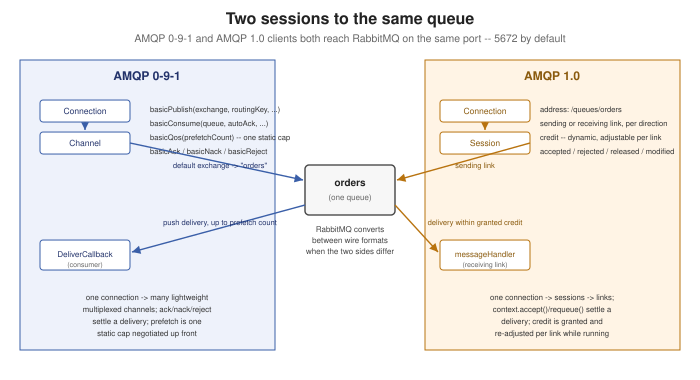

RabbitMQ and AMQP 1.0
|
This content was generated with the assistance of AI and should be verified against the official documentation before being relied on in production. |
Every other RabbitMQ page in this section — RabbitMQ Architecture and the AMQP Model, Publishing to RabbitMQ, Consuming from RabbitMQ — works through AMQP 0-9-1, the protocol RabbitMQ was originally built around. This page covers the other protocol RabbitMQ speaks natively: AMQP 1.0, an entirely different, OASIS-standardized wire protocol that happens to share a name and a broker with 0-9-1 but very little else — its own addressing scheme, its own session/link model instead of channels, and its own flow-control and acknowledgement vocabulary. (`Quarkus’s SmallRye Reactive Messaging connector already covers consuming/producing AMQP 1.0 from a Quarkus application, at Messaging with SmallRye Reactive Messaging — this page covers the protocol itself and RabbitMQ’s own plain Java client for it.)
AMQP 1.0 as a core protocol since 4.0
AMQP 1.0 has been supported natively since RabbitMQ 4.0 — built into the broker itself rather than shipped as a plugin, the way it was in earlier RabbitMQ versions. As of 4.0, RabbitMQ accepts both AMQP 1.0 and AMQP 0-9-1 on the same port (5672 by default), detecting which protocol a given connection is speaking during the initial handshake, with no separate port or listener configuration required to enable it.
The v2 address format
An AMQP 1.0 link (below) attaches to an address rather than naming an exchange and routing key as separate
publish-time arguments the way basicPublish does. RabbitMQ’s current (v2) address syntax covers both queues and
exchanges, and requires every component — exchange name, routing key, queue name — to be percent-encoded per
RFC 3986:
| Address | Targets |
|---|---|
|
A specific queue directly, by name. |
|
An exchange, with a fixed routing key baked into the address itself. |
|
An exchange with no routing key fixed in the address — the routing key instead comes from the message’s own
|
(null address) |
No address fixed on the link at all — each message instead carries its own full target address (e.g.
|
Publisher publisher = connection.publisherBuilder()
.queue("orders") // shorthand for the /queues/orders address
.build();Sessions and links vs. channels
Where AMQP 0-9-1 multiplexes a connection into channels and calls basicPublish/basicConsume directly on
one, AMQP 1.0 multiplexes a connection into sessions, and a session in turn holds one or more links — a
link being a single-direction attachment between a source and a target that actually carries message transfers, a
sending link for publishing or a receiving link for consuming. A RabbitMQ Publisher or Consumer built through
the AMQP 1.0 Java client (below) is backed by exactly this kind of link under the hood, established over a
session the client manages for it — conceptually one level more structured than a 0-9-1 channel’s basicPublish/
basicConsume calls, but serving the same multiplexing purpose.
Credit-based flow control vs. prefetch
Consuming from RabbitMQ covers 0-9-1’s prefetch (basicQos) — a single outstanding-delivery cap, set per consumer or per channel. AMQP 1.0’s credit-based flow control is
finer-grained: a receiving link grants the sender a specific amount of credit (how many more messages it is
currently willing to receive), which the client can adjust and re-prioritize dynamically per link while the
connection is running, rather than being limited to one static cap negotiated once. That gives an application
sharing a single connection across several consumers more room to shape how flow is distributed between them than
prefetch alone allows.
Settlement outcomes vs. ack/nack
AMQP 1.0 replaces basic.ack/basic.nack/basic.reject with settlement, expressed as one of four outcomes
a receiver applies to a delivery:
| Outcome | Closest 0-9-1 equivalent | Meaning |
|---|---|---|
|
|
Processing succeeded — the broker may remove the message. |
|
|
Processing failed in a way that should not be retried as-is — triggers dead-lettering
(RabbitMQ Reliability, Dead-Lettering
and TTL's |
|
|
Not processed — put back for redelivery, to this or another receiver. |
|
(no exact equivalent) |
Like |
Consumer consumer = connection.consumerBuilder()
.queue("orders")
.messageHandler((context, message) -> {
try {
process(message);
context.accept(); // settlement outcome: accepted
} catch (Exception e) {
context.requeue(); // settlement outcome: released
}
})
.build();Message annotations
RabbitMQ automatically attaches x-exchange and x-routing-key message annotations to a delivered AMQP 1.0
message, recording which exchange actually routed it and with which routing key — metadata a plain 0-9-1
delivery does not carry back to the consumer this directly. AMQP 1.0’s bare message (its body and its standard
properties/application-properties sections) is immutable in transit, which is what lets a receiver verify a
checksum or a signature computed over those sections regardless of which annotations or delivery-state wrapping
the broker added around it.
Interoperability between 0-9-1 and 1.0 clients
A RabbitMQ queue does not commit to one protocol — a message published over AMQP 1.0 and consumed over AMQP 0-9-1 (or the reverse) is automatically converted between the two wire formats by the broker. A message stays in its native format, with no conversion cost at all, only when both the publisher and the consumer speak the same protocol; interoperability is there for a gradual migration or a mixed client fleet, not something that needs to be configured queue by queue.
SQL filter expressions on streams
RabbitMQ Queue Types already introduced a stream’s two-layer filtering: a broker-side Bloom filter for cheap, approximate chunk skipping, and exact AMQP filter expressions for precise matching on top of it. Those exact filter expressions — including full SQL-like expressions, not just simple property equality — are evaluated server-side specifically over AMQP 1.0 links consuming from a stream, combining with the Bloom filter so a client still gets the cheap coarse skip before the broker evaluates the more expensive exact expression against what’s left.
The com.rabbitmq.client:amqp-client Java library
RabbitMQ ships a dedicated Java client for AMQP 1.0 — a separate library from the classic com.rabbitmq:amqp-client
0-9-1 client used throughout the rest of this section, with its own Maven coordinates,
com.rabbitmq.client:amqp-client (note the .client in the group ID, which is what actually distinguishes the two
on Maven Central). It targets RabbitMQ 4.0+ and requires Java 11 or newer.
package com.example.messaging.rabbitmq;
import com.rabbitmq.client.amqp.Connection;
import com.rabbitmq.client.amqp.Environment;
import com.rabbitmq.client.amqp.Publisher;
import com.rabbitmq.client.amqp.Consumer;
public class Amqp10OrdersExample {
public static void main(String[] args) throws Exception {
Environment environment = Environment.builder().build();
Connection connection = environment.connectionBuilder()
.uri("amqp://localhost:5672")
.build();
Publisher publisher = connection.publisherBuilder()
.queue("orders")
.build();
publisher.publish(publisher.message("{\"orderId\":\"order-42\"}".getBytes()),
context -> System.out.println("settled: " + context.state()));
Consumer consumer = connection.consumerBuilder()
.queue("orders")
.messageHandler((context, message) -> {
process(message.body());
context.accept();
})
.build();
}
private static void process(byte[] body) {
// apply the order
}
}See RabbitMQ AMQP 1.0 Java Client
Documentation Guide for the complete Environment/Connection/Publisher/Consumer API, including the
management interface for declaring queues and exchanges over the same connection.
